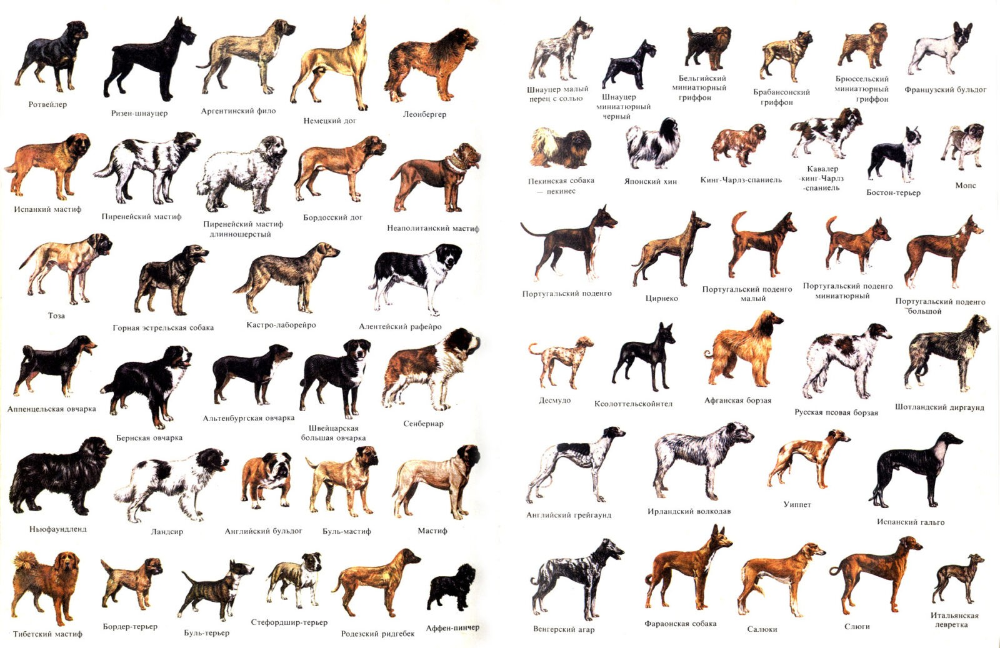
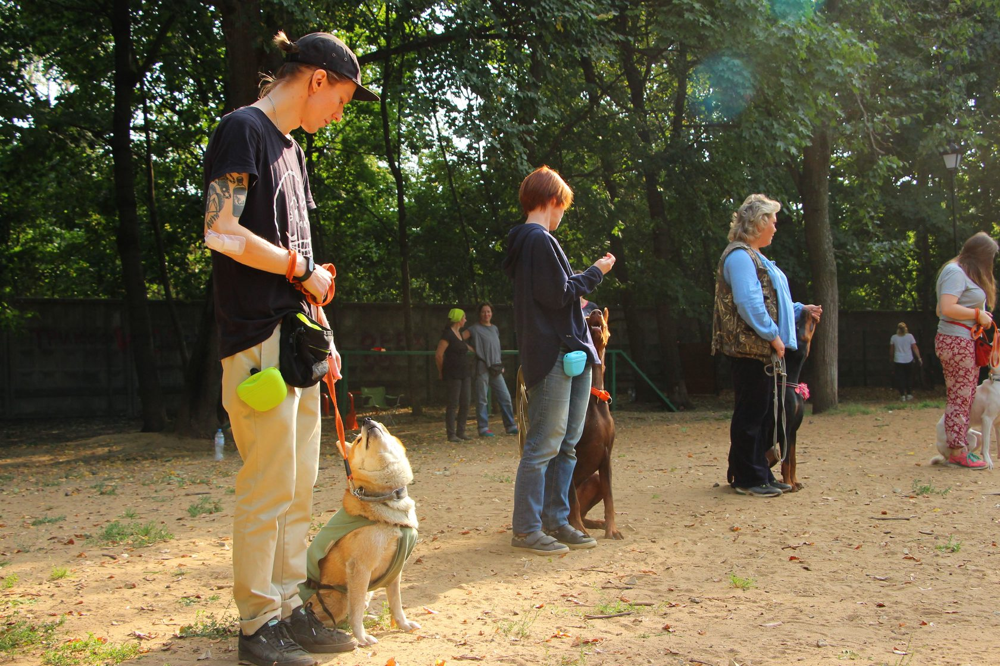

Собаки — это одни из самых популярных домашних животных, которые отличаются не только внешним видом, но и характером, поведением и предназначением. В зависимости от различных факторов, таких как размер, тип шерсти и назначение, породы собак можно классифицировать на несколько групп.
Уход за собаками — это многогранный процесс, который требует внимания и заботы от владельца. Правильное питание является основой здоровья вашего питомца. Важно выбирать качественный корм, который соответствует возрасту, породе и состоянию здоровья собаки. Регулярность кормления и учет индивидуальных потребностей помогут поддерживать оптимальный вес и общее состояние здоровья. Консультации с ветеринаром могут помочь в выборе наилучшего рациона для вашего четвероногого друга.
Физическая активность играет ключевую роль в жизни собаки. Прогулки на свежем воздухе, игры и тренировки не только поддерживают физическую форму, но и способствуют эмоциональному благополучию питомца. Социальные взаимодействия с другими собаками и людьми помогают развивать уверенность и уменьшают риск появления поведенческих проблем. Владельцы должны уделять время активным играм и дрессировке, что также укрепляет связь между собакой и хозяином.
Гигиена — еще один важный аспект ухода за собакой. Регулярное купание, чистка шерсти и уход за зубами способствуют поддержанию здоровья питомца. Владельцы должны следить за состоянием ушей и глаз, чтобы предотвратить инфекции. Профилактика заболеваний через регулярные ветеринарные осмотры и вакцинацию также играет важную роль в долгосрочном здоровье собаки.
Обучение и социализация являются необходимыми элементами ухода за собаками. Владельцы должны обучать своих питомцев основным командам и обеспечивать их социализацию с другими животными и людьми. Это поможет избежать проблем с поведением в будущем и сделает собаку более уверенной в различных ситуациях.
Наконец, эмоциональное благополучие собаки не менее важно, чем физическое здоровье. Создание комфортной среды, время для игр и общения, а также уважение к личному пространству собаки способствуют ее счастью. Заботясь о своем питомце во всех этих аспектах, владельцы не только обеспечивают его здоровье, но и укрепляют свою связь с ним, создавая гармоничную атмосферу для совместной жизни.
К началу страницы
Воспитание собаки — это не только процесс обучения командам, но и создание крепкой связи между питомцем и хозяином. Правильный подход к воспитанию может существенно улучшить качество совместной жизни, сделать её более комфортной и радостной. Рассмотрим ключевые аспекты, которые помогут вам воспитать счастливую и послушную собаку.
Первый шаг к успешному воспитанию — это умение понимать язык тела вашего питомца. Собаки общаются через жесты, мимику и позы, и важно уметь интерпретировать эти сигналы. Например, собака с опущенными ушами и хвостом может чувствовать страх или дискомфорт, в то время как собака с поднятым хвостом и расслабленным телом показывает уверенность и радость.
Отношения между собакой и хозяином должны строиться на доверии. Использование методов, основанных на положительном подкреплении, таких как похвала или лакомства за выполнение команд, способствует формированию здоровых отношений. Это помогает собаке понимать, что она делает что-то правильно, и мотивирует её на дальнейшие успехи.
Обучение базовым командам (например, "сидеть", "лежать", "ко мне") — важная часть воспитания. Рекомендуется проводить занятия короткими сессиями по 10-15 минут несколько раз в день. Это позволит избежать усталости как у собаки, так и у хозяина. Важно использовать положительное подкрепление: за каждую выполненную команду следует поощрять питомца.
Социализация — это процесс знакомства собаки с различными людьми, животными и окружающей средой. Чем больше опытов получит ваша собака в раннем возрасте, тем легче ей будет адаптироваться к новым ситуациям в будущем. Постепенное введение в новые обстоятельства помогает избежать страха и агрессии.
Необходимо быть готовым к тому, что у вашей собаки могут возникнуть проблемы с поведением. Это может проявляться в виде чрезмерного лая, агрессии или нежелательных привычек. Важно не наказывать собаку за плохое поведение, а искать причины его возникновения и работать над их устранением. Например, если собака лает на двери, возможно, она чувствует себя неуверенно или скучает.
Забота о здоровье собаки также играет важную роль в её воспитании. Регулярные визиты к ветеринару для вакцинации и профилактических осмотров помогут предотвратить множество заболеваний. Правильное питание и физическая активность также способствуют хорошему самочувствию вашего питомца.
Воспитание собаки — это сложный, но увлекательный процесс, который требует времени, терпения и любви. Следуя основным принципам понимания языка тела, создания доверительных отношений, обучения основным командам и социализации, вы сможете воспитать счастливого и послушного питомца. Не забывайте о здоровье вашей собаки — это залог её благополучия и долгой жизни рядом с вами.
К началу страницы
Хотите, чтобы ваша собака была послушной, счастливой и здоровой? Присоединяйтесь к нашему уникальному обучающему курсу по воспитанию собак! Мы предлагаем вам возможность научиться эффективным методам дрессировки, которые помогут вам установить доверительные отношения с вашим питомцем.
Мы гарантируем качественное обучение в комфортной и поддерживающей атмосфере. Наша цель — помочь вам создать крепкую связь с вашим питомцем, основанную на доверии и взаимопонимании.
К началу страницы